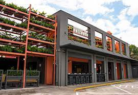
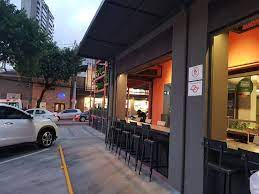
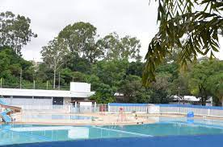

No alto da lapa existem vários pontos e lugares a serem visitados e conhecidos, na lista a baixo terá uma seleção de alguns desses pontos!
Mercado Municipal da Lapa
Construído em 1954, o mercado, ou mercadão foi considerado uma das construções mais modernas de toda a américa latina no passado. Lá podemos encontrar todo tipo de produto para cozinhar e preparar. De ingredientes para suas receitas, até artigos de decoração, o mercado tem peixaria, lojas de vinhos, bebidas, queijos, ervas medicinais, temperos e especiarias. E além de tudo isso você ainda encontra loja de artigos para pesca, pet shop, bombonieres, tabacarias, lotérica e caixa eletrônico 24 horas, e outras coisas da maior variedade
Shopping Center
Na região, é fácil encontrar diversas opções para fazer algumas comprinhas e ainda se divertir. Como por exemplo, o Shopping Center Lapa, que possui uma das melhores salas de cinema de São Paulo, junto com uma praça de alimentação bem ampla para conhecer diversos restaurantes e ambientes revitalizados. Além deste, também não poderíamos deixar de pontuar o Largo da Lapa, onde você pode encontrar tudo o que procura a ótimos preços, principalmente para aqueles que querem comprar para revender.
Bares tradicionais
A lapa tem como uma de suas principais características a vida boêmia. No bairro você pode encontrar vários bares conhecidos por suas boas comidas e bebidas. Como por exemplo, o Bar do Alemão, um bar café onde você encontrará drinks exóticos e muita música boa; e também pode ir até o Bar do Baixinho, onde existe uma grande variedade de petiscos, além de pratos tradicionais de São Paulo e muito chopp gelado.
Museu do Relógio
Além do "Mercadão", um ponto que sempre atrai muitos turistas é o Museu do Relógio Professor Dimas de Melo Pimenta, aberto em 1975, sendo o único deste segmento na América Latina. O museu tem cerca de 650 peças, entre elas raridades, como o relógio “Despertador com Cafeteira”, que era tendência nos séculos 19 e 20.
Restaurantes, lanchonetes, padarias
Na região do Alto da Lapa existem várias lanchonetes, restaurantes e padarias para desfrutar de seus pratos ou comprar produtos. Entre eles:
Armazém dos Pães
Padaria na esquina especializada em pães gourmet. Também serve sanduíches, pizzas e sucos frescos. Pode realizar retirada na loja, compra no local, refeição no lugar e entrega! Tudo isso na Av. Diógenes Ribeiro de Lima, 3490.
Padaria Letícia
Padaria informal com variedade de tortas, sobremesas e lanches, além de buffet de almoço. Localizada na R. Passo da Pátria, 756. Acesse o site! www.leticiapaes.com.br/
Regalo pão café afeto
Padaria 5 estrelas com café e refeição servido na hora e também para entregas. Venha conhecer na R. Sales Júnior, 344. Faça um pedido pelo Ifood! www.ifood.com.br/delivery
Brascatta Pizzaria
Pizzaria elegante e acolhedora que serve uma variedade de calzones e pizzas inovadoras. Pode retirar na porta, entregar ou realizar a refeição no local! Conheça mais no site www.brascatta.com.br/ ou visite o local na R. Dr. José Elias, 396.
Quintal do Espeto
Venha conhecer o bar e restaurante descontraído que serve várias opções de espetinhos em uma área coberta com muita vegetação. Conheça muito mais indo no local! R. Dr. José Elias, 547. Ou acesse o site para pedir ou fazer uma reserva! www.quintaldoespeto.com.br/
Burguer King
Rede de fast-food famosa com hambúrgueres grelhados, batata frita e milk-shakes. Entre no site www.burgerking.com.br ou vá até R. Cerro Corá, 1556
Dona Deôla
Uma padaria casual que serve sanduíches, especiais de almoço e uma grande variedade de pães. O local para refeições e compra fica aberto 24horas, venha conhecer na R. Pio XI, 1377. Cheque o site! http://www.donadeola.com.br/
Nakajiro Sushi
Restaurante japonês de opções contemporâneas chamativas em ambiente envolvente com boemia e mesas ao ar livre. Conheça tudo isso e muito mais ligando no telefone 01137988666. Ou vá até o local R. Pio XI, 1245.


Bullguer - Cerro Corá
Hamburgueria com retirada no local, entrega ou refeição no próprio estabelecimento localizado na R. Cerro Corá, 1984. Acesse o site! bullguer.com/

Pelezão
Localizado no alto da lapa, o Centro Educacional e Esportivo Edson Arantes do Nascimento (Pelezão) foi fundado em 20 de novembro de 1969. O clube municipal passou por várias revitalizações adquirindo novos espaços e opções de atividades para trazer um grande espaço de lazer, que é uma ótima opção para as férias e diversão para todas as idades! Confira https://www.capital.sp.gov.br/noticia/ferias-clube-pelezao-e-opcao-de-lazer-na-lapa